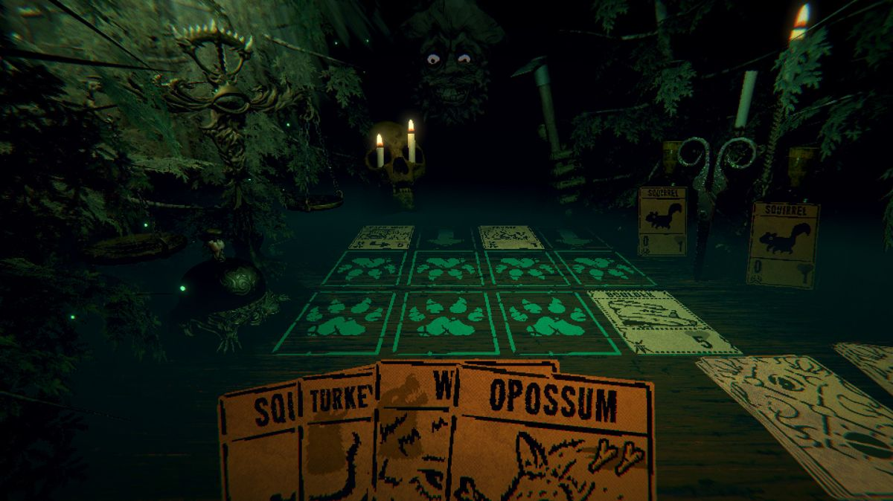
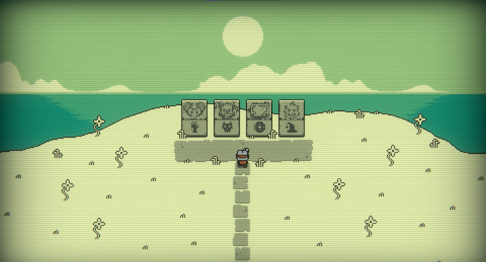
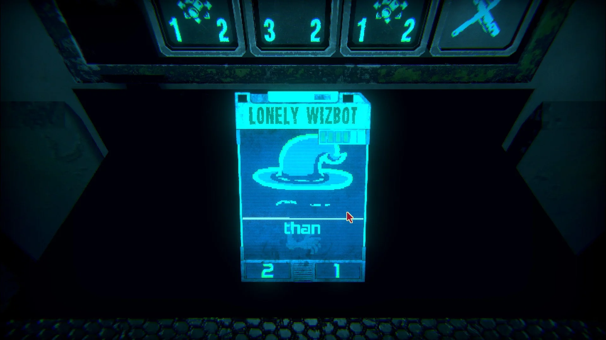

Description
From the creator of Pony Island and The Hex comes the latest mind melting,
self-destructing love letter to video games. Inscryption is an inky black
card-based odyssey that blends the deckbuilding roguelike, escape-room
style puzzles, and psychological horror into a blood-laced smoothie. Darker
still are the secrets inscrybed upon the cards...



Game Categories
- Genre: Strategy
- Perspective: 1st-person
- Pacing: Turn-based
- Gameplay: Deck-building
Review
When I was first assigned this game for review, I thought that it might be just another card drawing and puzzle affair that seem to be common these days. However, Inscryption kept my attention until the very end. The plot, the dark theme, and the mysterious mechanics is so well thought out that I have to give it an enthusiastic two thumbs up. The only downside that I can think of is that replayability might be limited after the first couple of play throughs. Even with that said, this title is worth the price of admission.
Score: 9.5 of 10
Source: Hooked Gamers (2166 reviews)